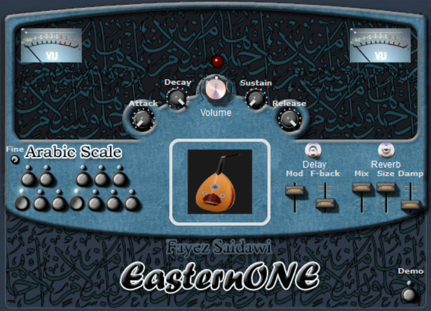

Go Back
Installing and Using 32-bit Plugins on a 64-bit Windows System: EasternOne.dll VST
The document is a guide for installing, using, and troubleshooting EasternOne.dll, a 32-bit VST plugin that enables the user to sample multiple previously unsampled Arabic instruments. The VST is capable of accurately recreating Maqams due to the ability to alter notes by half and quarter cents. The user can also change the dynamics and reverbs to create a realistic sound.
Before installing, it is important to know whether your computer is running on a 32-bit or 64-bit system. If the user has a modern 64-bit system, they will have to download and install a bridging application to modify the .dll to work on the 64-bit system. There are many options online; Jbridge is the one which will be utilized for this guide. It is low cost and has been around for a long time.
Additionally, this guide will highlight the more difficult controls and uses of the plugin to make them easier to understand while only giving a basic understanding of simple controls, e.g., Volume.
1. Installation
- Download from the VST for free site at VST4Free.
- Extract the contents of the file by right-clicking and selecting "Extract All."
- If you have a 32-bit system, simply place the .dll file in the plugins folder your DAW references (usually called VSTPlugins, although the folder can be named anything). If the user doesn’t know the folder's name or location, go to the settings in the DAW and specify the plugin folder.
- If you have a 64-bit system, you will need to bridge the file:
- Open Jbridge and select “I’ll be using a x64 (64-bit) host.”
- Select “Create bridging files inside a directory I’ll specify -> HIGHLY recommended! <-”
- Choose the location of the extracted .dll file and press “OK.”
- Select the VSTPlugins folder your DAW references for plugins and press “OK.”
- Open the DAW and allow or make it search for new plugins. It should notify you that it has found the new plugin.
- The plugin is now ready to be used.
2. Usage
2.1 Selecting the VST and Changing Instruments
- To select the VST, click on a track and add the VST to the track. If the user used Jbridge, the publisher's name will be [Jbridge] Fayez_saidawiU; for 32-bit systems, it will be Fayez_saidawiU.
- Click on the plugin. Depending on the DAW, there are different ways to switch instruments:
- In FL Studio, select the GUI tab at the top of the plugin window and use the arrows to change the instrument.
- In Waveform or other DAWs, the GUI will not display any arrows. Edit the Control parameters in the DAW main window:
- Enter the plugin settings window (e.g., in Waveform, right-click on the plugin).
- Select the parameter controls (e.g., hover over “Set quick control parameter” in Waveform).
- Select “Patch.”
- Modify the parameter number to the desired instrument.
2.2 Interface and Controls

2.2.1 Arabic Scale
This section describes the use of the controls under the words "Arabic Scale" on the GUI
- Fine Tuning Knob: Allows micro tonal adjustments to the pitch of all notes. When in the furthest counterclockwise position, it is one note below the pitch played on the keyboard, in the center it is at the same pitch, and in the furthest clockwise position it is one note above the pitch played. This allows for up to quarter and half cent changes to the pitch of all notes.
- Scale Notes: To lower a note by half a cent simply press the key on the GUI as it corresponds on the keyboard (e.g., for C and C-half #, press the C# key).
2.2.2 Attack
Knob controls the speed at which the note played reaches its peak velocity with the fastest rate fully counterclockwise.
2.2.3 Decay
Knob controls the rate at which the note drops from its peak velocity to its sustained velocity. If fully counterclockwise, the note will very quickly decrease in volume. If fully clockwise, velocity will decay after a while.
2.2.4 Volume
Knob controls the audible level of the plugin output.
2.2.5 Sustain
Knob controls the volume the note will sustain when being held. When fully clockwise the note sustains at a higher volume. Counterclockwise will lower the volume the instrument sustains at.
2.2.6 Release
Knob controls the rate at which the note decays after being released. When fully clockwise the note will take a long time to decay. When fully counterclockwise the note will cut off instantly.
2.2.7 Delay
The delay function is on when the switch is in the middle position
- Mod: Slider changes the rate at which the delay occurs. When in the highest position the time between repeats is longest.
- F-back: Slider changes the volume of the repeats. When in the highest position the repeats will be loudest.
2.2.8 Reverb
The reverb function is on when the switch is in the middle position
This plugin’s reverb behaves strangely, having a high attack will not be diminished by the reverb setting, it is recommended to decrease the attack of the instrument to increase the wetness of the reverb mix or use a external plugin.
- Mix: Slider changes the mixture of the “dry” instrument sound and the “wet” reverb sound. When in the lowest position the sound will mostly be the instrument sound. When in the highest position have a greater mix of reverb.
- Size: Slider changes the “size” of the “room” that the reverb is in. When in the highest position feedback is the highest.
- Damp: Slider changes the tone of the reverb. When in the highest position the sound has more bass. When in the lowest position the sound has more treble.